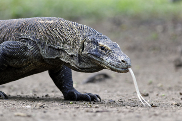

Os Dragões-de-Komodo são encontrados em alguns poucos lugares do planeta. Eles vivem em três ilhas do Pacífico, Rinca,
Flores e Komodo, local que originou seu nome. É um animal extremamente rápido, agressivo e inteligente. Algumas pesquisas
comparam sua inteligência com a dos mamíferos!

Esse animal é o maior lagarto do mundo, chegando a atingir até 3 metros e meio de comprimento quando adulto, e seu peso pode
superar os 100 quilos. Quando filhote, após sair do ovo, ele apresenta aproximadamente 25 centímetros.
Quando jovem, os dragões-de-Komodo vivem em árvores e alimentam-se apenas de insetos. Quando adulto, esse animal vive na terra
e alimenta-se de outros animais, geralmente mamíferos. Já foram relatados, inclusive, diversos casos de ataque a humanos.
Para atacar suas presas, o dragão esconde-se até chegar a hora certa de dar a sua mordida poderosa. Quando a presa aparece, ele
rapidamente a ataca, usando a força de suas patas e cauda, que são capazes de derrubar até mesmo árvores.